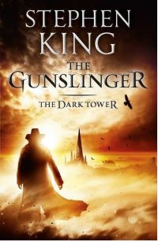
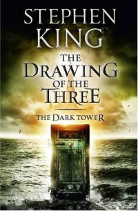
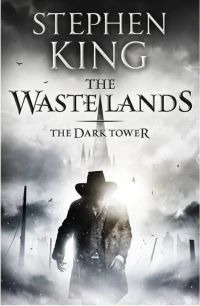
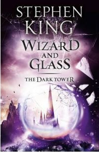
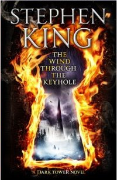
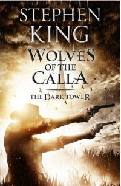
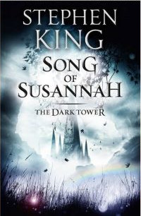
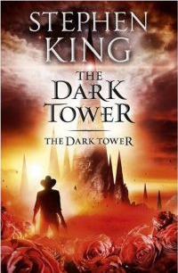

What is The Dark Tower?
The Dark Tower is a series of eight novels, one short story, and a children's book written by American author Stephen King. Incorporating themes from multiple genres, including dark fantasy, science fantasy, horror, and Western, it describes a "gunslinger" and his quest toward a tower, the nature of which is both physical and metaphorical. The series, and its use of the Dark Tower, expands upon Stephen King's multiverse and in doing so, links together many of his other novels.
In addition to the eight novels of the series proper that comprise 4,250 pages, many of King's other books relate to the story, introducing concepts and characters that come into play as the series progresses.
The series was chiefly inspired by the poem "Childe Roland to the Dark Tower Came" by Robert Browning, whose full text was included in the final volume's appendix. In the preface to the revised 2003 edition of The Gunslinger, King also identifies The Lord of the Rings, Arthurian legend, and The Good, the Bad and the Ugly as inspirations. He identifies Clint Eastwood's "Man with No Name" character as one of the major inspirations for the protagonist, Roland Deschain. King's style of location names in the series, such as Mid-World, and his development of a unique language (High Speech), are also influenced by J. R. R. Tolkien's work.
The series is referred to on King's website as his magnum opus.
The Series
The Dark Tower I: The Gunslinger
The Dark Tower II: The Drawing of the Three
The Dark Tower III: The Waste Lands
The Dark Tower IV: Wizard and Glass
The Dark Tower: The Wind Through the Keyhole
The Darktower V: Wolves of the Calla
The Dark Tower VI: Song of Susannah
The Dark Tower VII: The Dark Tower
Additional Information
| # | Title | Subtitle | Pages | Words | Release | Awards |
|---|---|---|---|---|---|---|
| 1 | The Dark Tower I: The Gunslinger | Resumption | 224 | 55,376 | 1982 | |
| 2 | The Dark Tower II: The Drawing of the Three | Renewal | 400 | 125,948 | 1988 | |
| 3 | The Dark Tower III: The Waste Lands | Redemption | 512 | 173,489 | 1991 | |
| 4 | The Dark Tower IV: Wizard and Glass | Regard | 787 | 254,691 | 1997 | 1998 Locus Award Nominee |
| 4.5 | The Dark Tower: The Wind Through The Keyhole | 336 | 91,857 | 2012 | ||
| 5 | The Dark Tower V: Wolves of the Calla | Resistance | 714 | 242,776 | 2003 | 2004 Locus Award Nominee |
| 6 | The Dark Tower VI: Song of Susannah | Reproduction | 432 | 118,221 | 2004 | 2005 Locus Award Nominee |
| 7 | The Dark Tower VII: The Dark Tower | Reproduction, revelation, redemption, and resumption |
845 | 272,273 | 2004 | 2005 British Fantasy Award Winner |